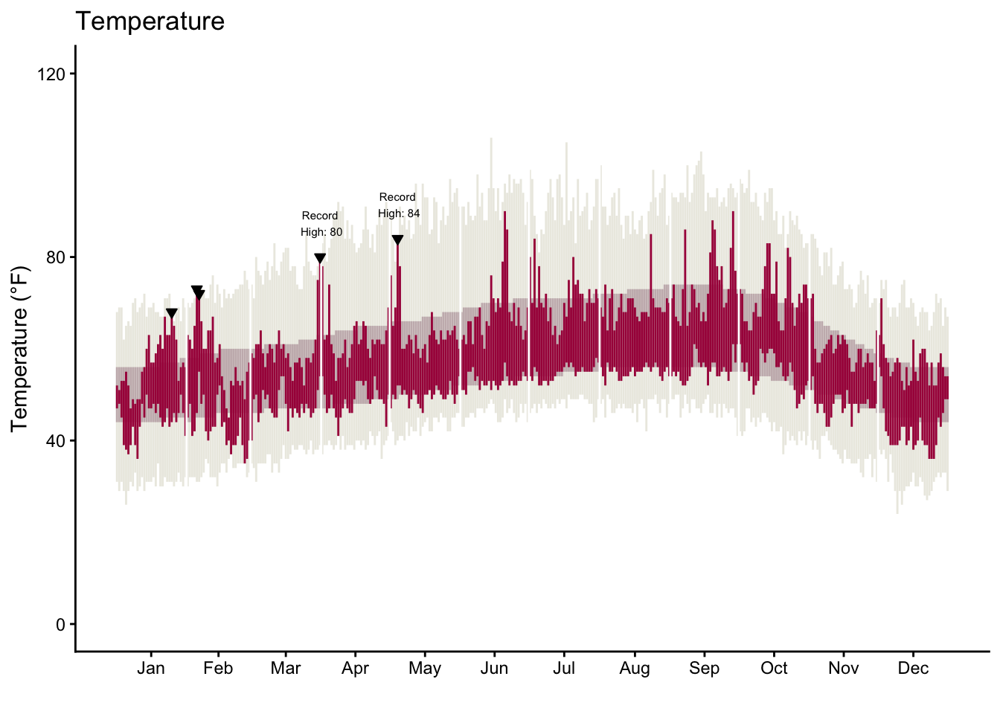
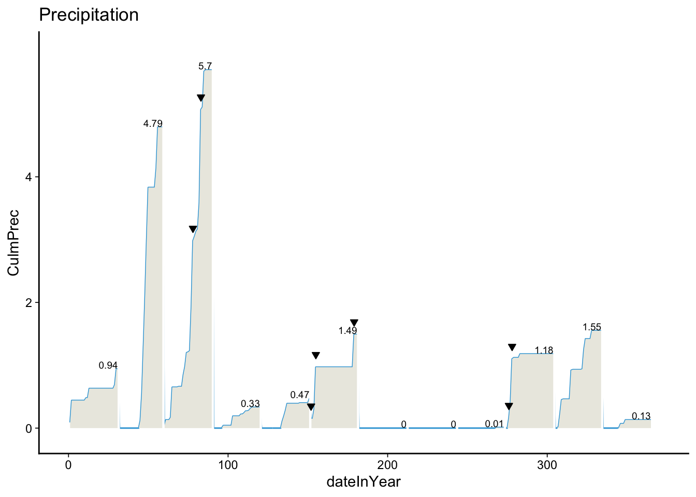

HW02-P1 Adv Data Viz
Instructions
Using ggplot2 and other tools in R, recreate the original New York Times graphic to the greatest extent possible. Try to get as close as possible to the figure below:

You will need to use reference pages and documentation to discover necessary tools. For example, you may want to Google search “ggplot multiple plots”. When looking through results, check publication dates and use newer references. Some helpful resources could include R documentation, Stack Overflow, and R cheatsheets.
Requirements
- Temperature graph
- Bands for the record, normal, and actual highs and lows are shown in the correct colors.
- Downward triangles point to the record high temperatures above the red band.
- Text displays the record high temperatures above the triangles.
- X-axis label: 3-letter month abbreviations appear in the middle of each month.
- Y-axis label: Tick marks at 0, 40, 80, and 120 only.
- Vertical lines separate the months.
- Title of “Temperature” is included.
- Precipitation
- Tan area and blue line reflecting the monthly cumulative precipitation is included.
- Text (number) for cumulative precipitation for each month is included at the end of each month just above the blue line.
- Downward triangles point to the record precipitation days.
- Vertical lines separate the months.
- Title of “Precipitation” is included.
- Overall
- Both the temperature and precipitation graphs are in one figure.
- The temperature plot takes up more vertical space than the precipitation plot.
- The title “SFO weather in 2011” is present.
- Resource reflection
- At least 1 resource is listed
- At least 3 sentences about resources and their helpfulness in the task
Bonus: If you’d like further practice, recreate the legend in the temperature graph that shows how the colored lines relate to record, normal, and actual highs.
Setup
Visualization
Temperature Graph
Code
# Calculates month midpoints
month_positions <- weather %>%
group_by(Month) %>%
summarize(mid_day = (min(dateInYear) + max(dateInYear)) / 2)
# Creates month boundaries
month_breaks <- weather %>%
group_by(Month) %>%
summarize(last_day = max(dateInYear)) %>%
filter(Month != 12)
# Get only the TOP 2 highest record temperatures for labels
top_2_records <- weather %>%
filter(Record == TRUE) %>%
arrange(desc(High)) %>%
slice(1:2) # Take only the top 2
# Plots the temp viz
temp_plot <- ggplot(weather, aes(x = dateInYear)) +
geom_linerange(aes(ymin = RecordLow, ymax = RecordHigh),
color = "#ECEBE3") +
geom_linerange(aes(ymin = NormalLow, ymax = NormalHigh),
color = "#C8B8BA") +
geom_linerange(aes(ymin = Low, ymax = High),
color = "#A90248") +
geom_vline(data = month_breaks, aes(xintercept = last_day + 0.5),
color = "white", size = 0.5) +
# Triangles for ALL record high days
geom_point(data = weather %>% filter(Record == TRUE),
aes(x = dateInYear, y = High),
shape = 25, size = 1.5, fill = "black") +
# Text labels ONLY for top 2 highest records
geom_text(data = top_2_records,
aes(x = dateInYear, y = High, label = RecordText),
size = 2, hjust = 0.5, vjust = -0.9) +
scale_y_continuous(limits = c(0, 120), breaks = c(0, 40, 80, 120)) +
scale_x_continuous(
breaks = month_positions$mid_day,
labels = month.abb
) +
theme_classic() +
labs(title = "Temperature",
x = "",
y = "Temperature (°F)") +
theme(legend.position = "none")
temp_plot
Precipitation Graph
Code
# A tibble: 11 × 2
Month last_day
<dbl> <dbl>
1 1 31
2 2 59
3 3 90
4 4 120
5 5 151
6 6 181
7 7 212
8 8 243
9 9 273
10 10 304
11 11 334Code
# Plots the precipitation viz
precip_plot <- ggplot(weather, aes(x = dateInYear)) +
geom_line(aes(y = CulmPrec), color = "#32a3d8", size = 0.5) +
geom_ribbon(aes(ymin = 0, ymax = CulmPrec),
fill = "#ebeae2", color = NA) +
geom_vline(
data = month_breaks,
aes(xintercept = last_day + 0.5),
color = "white",
size = 0.8,
linetype = "solid"
) +
geom_point(
data = weather %>% filter(RecordP == TRUE),
aes(x = dateInYear, y = CulmPrec +0.2),
shape = 25,
fill = "black",
color = "black",
size = 1.5
) +
geom_text(
data = monthly_precip,
aes(x = last_day, y = total_precip, label = round(total_precip, 2)),
vjust = -0.1,
hjust = 1,
size = 2.5,
color = "black"
) +
scale_y_continuous(limits = c(-0.1, 6), breaks = c(0,2,4)) +
scale_x_continuous(limits = c(0, 370), breaks = c(0,100,200,300)) +
theme_classic() +
theme(
panel.grid = element_blank(),
panel.border = element_blank(),
panel.background = element_rect(fill = "white", color = NA),
plot.background = element_rect(fill = "white", color = NA),
axis.line = element_line(color = "black", size = 0.5),
axis.ticks = element_line(color = "black", size = 0.3)
) +
labs(
title = "Precipitation",
x = "dateInYear",
y = "CulmPrec"
)
precip_plot
Overall Graph
Resources Reflection (required)
List the resources you used to help with this assignment then write 3-5 sentence reflection on which resources were most helpful in finishing this task.
Resources:
03 Adv Data Viz in class activity
ggplot2 documentation
Stack Overflow
Reflection: The most helpful resource for this assignment was the ggplot2 documentation because it explains how different functions work by providing example code and also visualizations. In particular, it was very useful in figuring out how to use the geom_linerage() function. The in class activity was useful as well since it took you step by step in learning the data and the functions, and then eventually piecing together the final visualizations. I used Stack Overflow a few times to understand confusing errors, which helped to resolve them.